02.MOE 前世今生(DONE)#
Author by: 张晓天
1991 年，Robert Jacobs 和 Geoffrey Hinton 在论文 "Adaptive Mixtures of Local Experts" 中首次提出 MoE 时，他们或许未曾预料到，这个旨在解决‘分而治之’的神经网络框架，会在沉寂了三十年后再次引起大家关注。本节将初步梳理 MoE 相关的经典奠基工作，介绍模型架构形成到智能涌现，以及几个近期发布的中文 MoE 模型，从背景、思路和效果来了解 MoE 模型的前世今生。
MoE 简史#
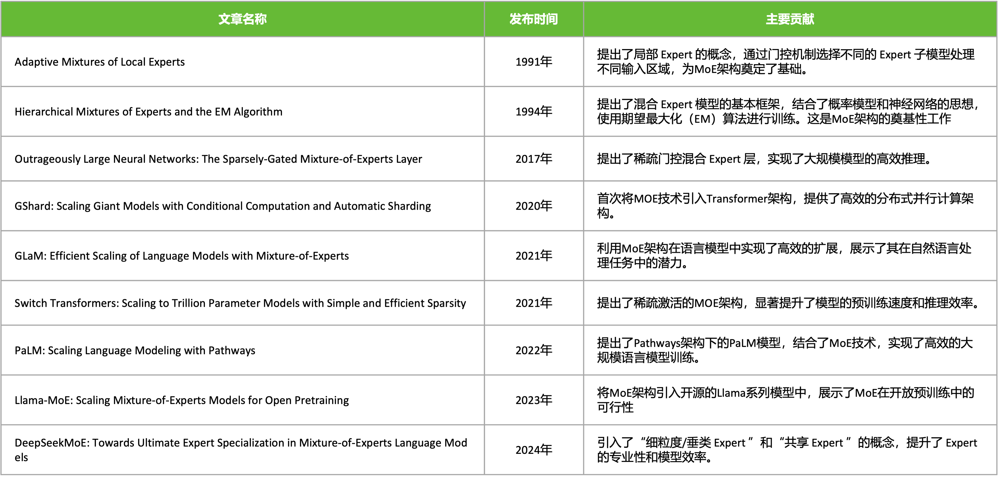
1991 年 MoE 局部专家概念性想法被 "Adaptive Mixtures of Local Experts" 论文所提出，但 MoE 架构真正的理论基石是 1994 年的 "Hierarchical Mixtures of Experts and the EM Algorithm" 论文，它超越了 1991 年提出的概念性想法，将 MoE 建模为一个概率模型。
2017 年的"Outrageously Large Neural Networks: The Sparsely-Gated Mixture-of-Experts Layer" 论文，首次将 MoE 应用于大规模神经网络，它提出了一种可导的稀疏门控机制，使得对于每个输入样本，只激活 Top-K 个专家（通常是 K=1 或 2）。这意味着计算成本不再随着专家数量线性增长（O(n)），而是几乎恒定（O(1)），只与激活的专家数有关。
2020 年的“GShard: Scaling Giant Models with Conditional Computation and Automatic Sharding”论文则首次将 MoE 技术系统地、成功地集成到 Transformer 架构中，并设计了高效的分布式训练方案，开启了 MoE 在 LLM 时代的主流应用。2021 年的“Switch Transformers: Scaling to Trillion Parameter Models with Simple and Efficient Sparsity” 论文，在 GShard 的基础上，进一步简化 MoE 架构、提出 K=1 路由等简化稳定技术，成功训练万亿模型，将效率和规模推向新高峰。
2024 年的 “DeepSeekMoE: Towards Ultimate Expert Specialization in Mixture-of-Experts Language Models” 论文采用 细粒度专家划分 和 共享专家机制，60 亿参数的 DeepSeekMoE 仅激活约 28 亿参数，计算量（74.4 TFLOPs）比同等规模的密集模型（如 Llama 2-7B）减少 60%，但性能相当甚至更优，成为开源 MoE 大模型的标杆之一。
进入 LLM 大模型时间，MoE 的发展更加迅猛，大大小小的基于 MoE 的模型被发布出来。例如，23 年 6 月 George Hotz 爆料 GPT4 是 8×220B MoE 模型，2023 年，Mistral AI 发布的 Mistral 8x7B 模型由 70 亿参数的小模型组合起来的 MoE 模型，直接在多个跑分上超过了多达 700 亿参数的 Llama 2。2025 年幻方量化(深度求索)，在国内首个开源 MoE 模型 DeepSeek-v3。
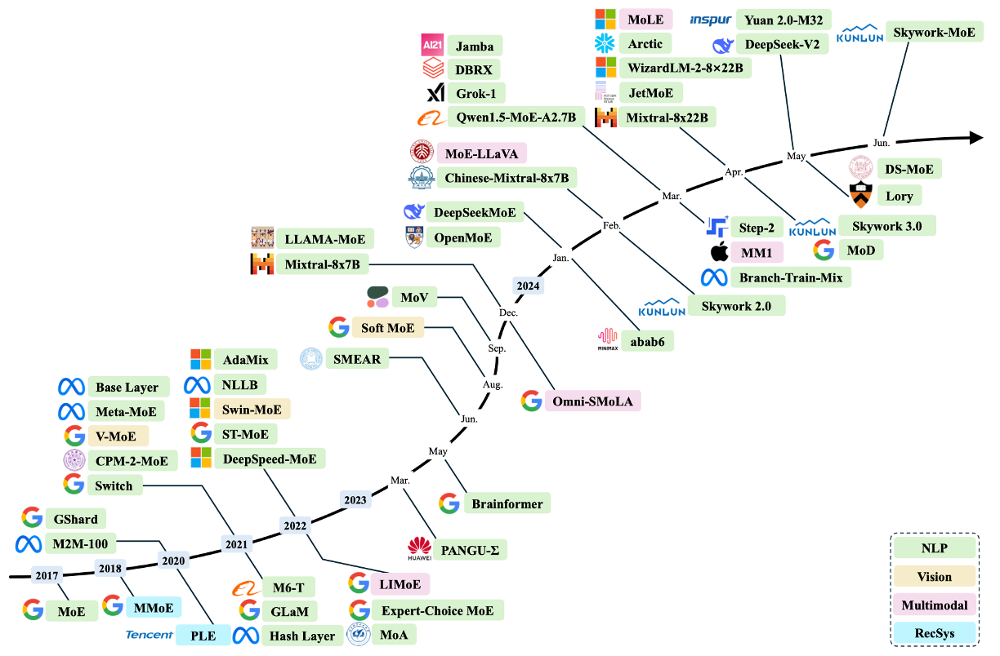
除了在 NLP 领域，计算机视觉（黄色），多模态（粉色），推荐系统（青色）等领域，MoE 也在被快速应用和发展。
传统 MoE 结构#
专家网络（Experts）
每个专家 \(f_i\) 是一个前馈神经网络（FFN）：
输入：Token \(x\)
输出：\(f_i(x)\), 其中 \(i \in \{1, \dots, N\}\)
门控网络（Gating Network）
门控网络 \(G\) 生成专家权重分布：
\(W_g\): 门控权重矩阵
\(b_g\): 偏置项
\(\text{Softmax}\) 保证 \(\sum_{i=1}^N G(x)_i = 1\)
输出计算
MoE 层的输出是所有专家的加权和：
稀疏 MoE 仅激活 Top-K 专家（通常 \(K=1\) 或 \(2\)）：
4.代码示例
以下是 PyTorch 风格的伪代码，展示传统 MoE 层的实现逻辑：
class MoELayer(nn.Module):
def __init__(self, num_experts, hidden_size, expert_size):
super().__init__()
self.experts = nn.ModuleList([FeedForward(hidden_size, expert_size) for _ in range(num_experts)])
self.gate = nn.Linear(hidden_size, num_experts) # 门控网络
def forward(self, x):
# 门控计算（Softmax 权重）
gate_scores = torch.softmax(self.gate(x), dim=-1) # [batch_size, seq_len, num_experts]
# 稀疏化：仅保留 Top-K 专家
topk_values, topk_indices = torch.topk(gate_scores, k=2) # Top-2
# 计算专家输出并加权求和
output = 0
for i in range(2):
expert_mask = (topk_indices == i) # 当前专家的 Token 掩码
expert_output = self.experts[i](x) # 专家计算
output += expert_output * topk_values[expert_mask] # 加权累加
return output
为什么 MoE 选择替换 FFN 层#
为什么 MoE 层的位置选择在每个 Transformer 块内的前馈网络 FFN 层进行替换？
要了解这个问题，我们首先需要知道在标准 Transformer 中，FFN 层通常占据 70% 以上 的参数（如 Llama 7B：Attention 占 30%，FFN 占 70%），而且就计算复杂度来说，FFN 的计算复杂度为 \(O(2 \times d_{model} \times d_{ff})\)，远高于 Attention 的 \(O(n^2 \times d_{model})\)。当模型规模增大时，FFN 的计算需求呈线性增长，成为扩展的主要瓶颈，尤其在长序列场景。
其次，在 Transformer 中，Attention 负责跨 token 相关性计算，FFN 是对每个 token 独立进行特征增强，这与 MoE 的 per-token 路由机制天然兼容。
正如 Yann LeCun 所言："未来的 AI 系统必然是模块化专业分工的"。MoE 在 FFN 层的应用正是这一思想的工程实践。
MOE 结构的分类#
MoE 的核心差异在于 门控函数（Gating/Router）如何选择专家，可分为三类：
类型 |
专家激活范围 |
计算复杂度 |
典型应用场景 |
|---|---|---|---|
稠密 MoE |
所有专家 |
\(O(N)\) |
小规模模型、多模态融合 |
稀疏 MoE |
Top-K 专家 |
\(O(K)\) |
大规模语言模型（LLM） |
软 MoE |
专家特征混合 |
\(O(N)\) |
视觉任务、轻量化模型 |
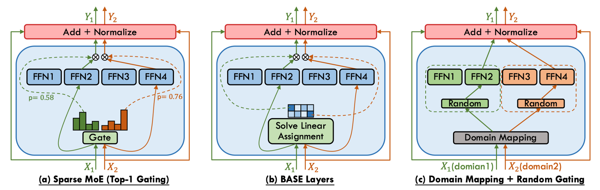
稠密 MoE 的核心特征为全专家激活，对每个输入 token，门控网络生成所有专家的权重 \(G(x) \in \mathbb{R}^N\)。优势是保留所有专家信息，无需处理负载均衡问题，适合需要细粒度融合的任务（如多模态），但劣势是计算成本随专家数量线性增长 \(O(N)\)，难以扩展。稠密 MoE 模型广泛用在 EvoMoE、MoLE、LoRAMoE 和 DS-MoE 等研究。
稀疏 MoE 的核心特征为条件计算，仅激活 Top-K 专家（通常 \(K=1\) 或 \(2\)），其余专家权重置零。存在的问题是门控网络可能偏向少数专家，导致其他专家未被充分训练，需要通过负载均衡来解决，还需要添加可学习噪声（Noisy Top-K Gating）防止路由坍缩。稀疏 MoE 模型常见的有 Switch Transformer、GShard 和 DeepSeekMoE 等研究。
软 MoE 的核心特征为专家特征混合，不显式选择专家，而是将输入 token 与专家特征加权融合。优点是完全可微，适合端到端训练，避免路由离散性带来的梯度估计问题。劣势为计算成本与稠密 MoE 相当，专家专业化程度较低。典型的研究有 Soft MoE、Expert Choice Routing 等。
MoE 激活的参数#
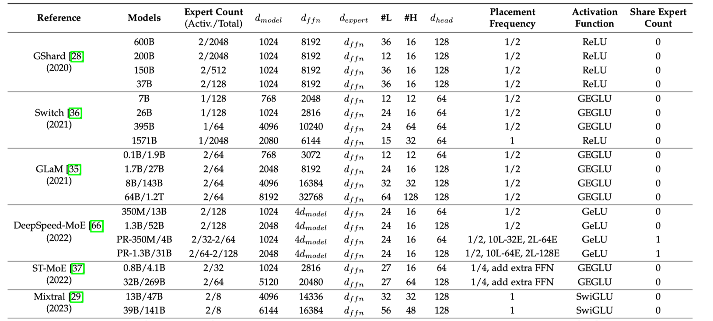
MoE 模型的参数量计算，不仅看总参数量，还看激活专家数量与总专家的数量对比。如 DeepSeek-MoE 中，其参数量由稠密部分和稀疏专家部分共同决定，需分层计算。如上表所示，其中 \(d_{\text{model}} \) 代表隐藏层的大小，\(d_{ffn}\) 是 FFN 中间层大小，\(d_{expert}\) 专家中间层大小, #L 代表层数，#H 表示注意头数量，\(d_{head}\) 表示注意头大小。
90 年代初期#
在神经网络发展的早期阶段，Hinton 与 Jordan 提出的《Adaptive Mixtures of Local Experts》首次实现了监督学习与分治策略的系统性融合。该架构由两类可微分组件构成：1）一组异构的专家网络（Experts），每个专家通过前馈结构建模输入空间的局部特征分布；2）可训练的门控网络（Gating Network），以输入依赖的 softmax 权重动态分配样本到专家子网络。其数学表述为：
其中门控输出 \(g_i(\mathbf{x}) = \text{softmax}(\mathbf{W}_g^T \mathbf{x})_i\) 满足概率单纯形约束。通过EM 算法框架下的竞争性学习，专家网络自发形成输入空间的分区专业化（Partition Specialization），这一性质在原文 Theorem 2 中严格证明：当损失函数为负对数似然时，梯度下降优化会驱使各专家收敛至数据分布的不同模态区域。
该工作的深远影响体现在三方面：
计算效率：首次提出条件计算（Conditional Computation）思想，仅激活相关专家，为后续稀疏化 MoE（如 Switch Transformer 的 Top-2 路由）奠定基础；
概率解释：将输出建模为混合密度网络（Mixture Density Network），启发了贝叶斯 MoE 等扩展；
生物学合理性：其模块化特性与大脑皮层的功能分区理论高度契合。
当代大规模 MoE 系统（如 Google 的 GLaM 模型）仍遵循这一范式，但通过引入负载均衡损失（如 2017 年 Shazeer 提出的辅助损失项）解决了原始版本中专家利用率不均的缺陷。Hinton-Jordan MoE 的核心理念——动态路由的模块化学习，已成为突破单一模型 scaling law 的关键技术路径。
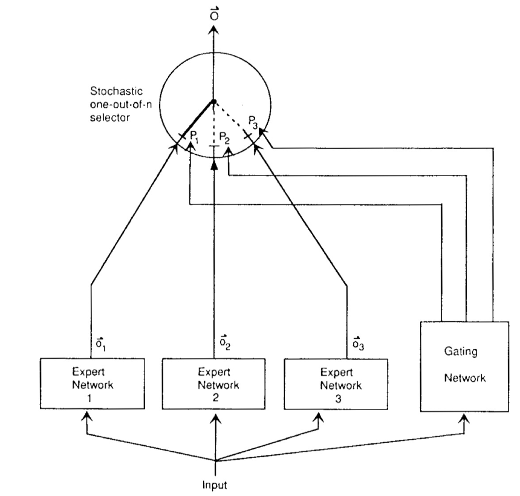
RNN 时代#
传统神经网络面临一个根本性矛盾：模型容量与计算效率之间的权衡。增加网络参数可以提升模型表达能力，但同时会导致计算成本呈线性甚至超线性增长。2017 年前，即使最先进的 LSTM 模型也难以突破数十亿参数的规模。这是由于计算资源、内存瓶颈等限制。
2017 年 1 月，Google 研究团队在论文 “Outrageously Large Neural Networks: The Sparsely-Gated Mixture-of-Experts Layer” 中提出了一种突破性的神经网络架构——稀疏门控混合专家层。混合专家层(MoE)由 N 个专家网络(Expert)和一个门控网络(Gate)组成。
传统 MoE 的问题是计算成本仍随专家数量线性增长，稀疏门控混合专家层保留前 k 个最大值并将其余置为-∞，这实现了每个样本仅激活 k 个专家(k≪N)，输入自适应的专家选择，通过 softmax 保持可微性的特点。这一工作不仅创造了当时最大规模神经网络记录(1370 亿参数)，更开创了条件计算(Conditional Computation)在大规模语言模型中的应用先河。
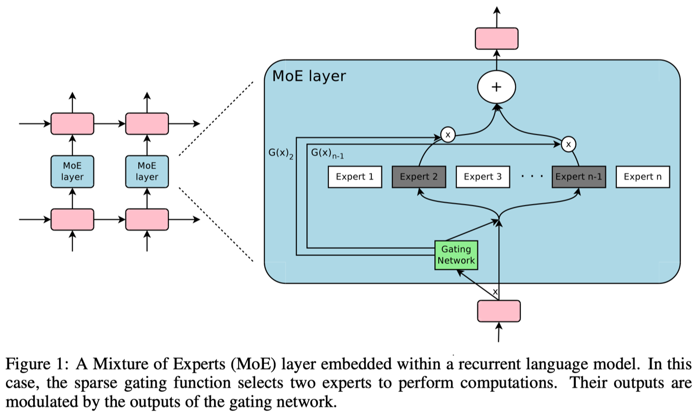
Transformer 时代#
Google 在 2020-2022 年间实现了 MoE 技术的三大里程碑式突破：GShard 首次将 MoE 成功集成至 Transformer 架构并实现 6000 亿参数规模；Switch Transformer 通过简化路由策略突破万亿参数大关；ST-MoE 系统性地解决了训练稳定性与迁移学习难题。
模型 |
发布时间 |
参数量 |
专家数 |
关键创新 |
|---|---|---|---|---|
GShard |
2020.6 |
600B |
2048 |
Enc-Dec MoE, 自动分片 |
Switch |
2021.1 |
1.6T |
2048 |
单专家路由 |
ST-MoE |
2022.2 |
269B |
32B 激活 |
稳定训练方案 |
2020 年 6 月，GShard 首次将 MoE 层整合进标准 Transformer 的 Encoder-Decoder 结构，采用每两层替换一个 FFN 为 MoE 层的策略，同时通过引入随机性防止路由决策固化。同时 GShard 提出自动分片技术实现 6000 亿参数训练。
其中噪声项ε在训练初期较大，随训练逐渐衰减。
同时定义专家容量 \( C = \frac{k \cdot B}{N} \cdot \mu\)，其中：
\(k\)：激活专家数
\(B\)：批次大小
\(N\)：专家总数
\(\mu\)：容量因子(通常 1.0-1.25)
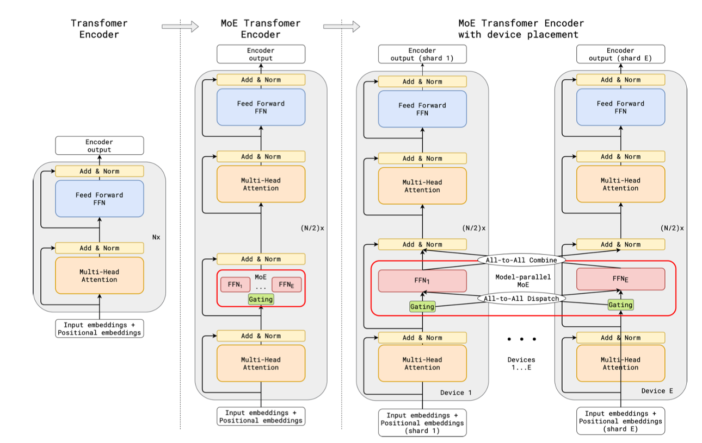
在 2021 年 1 月，在 T5（encoder-decoder）基础上，简化 routing 策略，实现 1.6T 参数量 switch transformer。其主要做出两大关键简化：1. 单专家路由 k=1，极大降低通信开销；2. 专家容量自适应，动态调整容量因子μ。同时 Switch 提出蒸馏到稠密策略，通过训练大型 Switch Teacher，然后蒸馏到小型稠密 Student，实现模型压缩与加速。展示了 MoE 在大模型中的潜力。
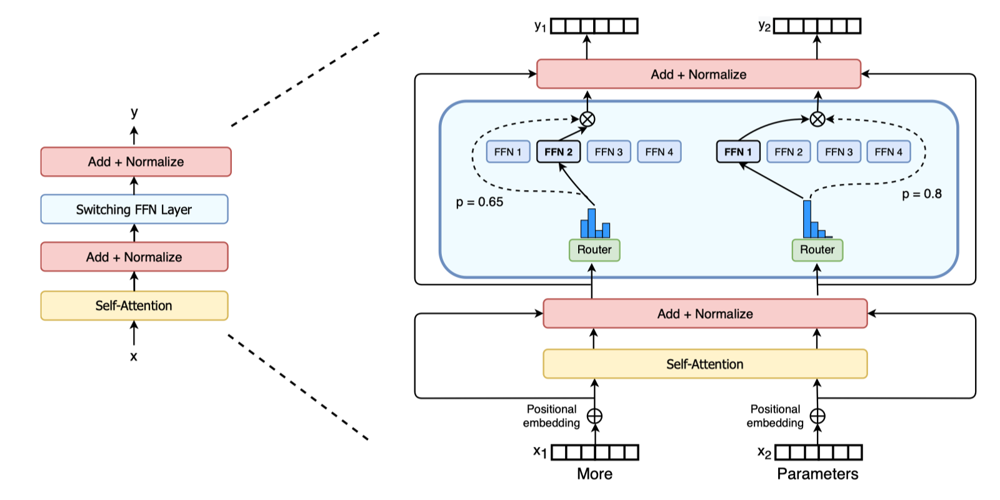
2022 年 2 月，Google 发布 ST-MoE，基于 encoder-decoder 结构 MoE，最大 269B，32B 激活参数。解决 MoE 模型在训练和微调中的不稳定性问题，并提升其迁移学习能力。ST-MoE 通过引入梯度裁剪、噪声注入、路由器限制缓解 MoE 模型的训练不稳定性问题；优化微调策略，使 ST-MoE 提升迁移学习能力，更好地适应下游任务，减少过拟合；
# 路由器特定裁剪
router_grad_norm = torch.nn.utils.clip_grad_norm_(
router.parameters(),
max_norm=1.0,
norm_type=2.0
)
在路由器 logits 添加分类相关噪声：
从 GShard 到 ST-MoE 的技术演进，标志着 MoE 从研究原型到生产级解决方案的成熟过程。
GPT 时代#
随着 ChatGPT 等应用的爆发，MoE 技术将继续在效率与性能的平衡中扮演关键角色。GLaM 作为首个万亿级 decoder-only MoE 模型，通过稀疏激活和条件计算实现了 97B 激活参数下的卓越性能；而 DeepSeek MoE 则通过专家共享和内存优化等创新，在保持模型性能的同时显著降低计算开销。
GLaM 采用纯 Decoder 架构，采用稀疏 MoE，包含 1.2 万亿参数，实际激活参数 97B，最大为 1.2T 的 decoder-only 模型。它在每层 FFN 位置插入 MoE 模块：
class GLaMBlock(nn.Module):
def __init__(self, d_model, num_experts=64):
self.attention = Attention(d_model)
self.moe = MoE(
experts=[Expert(d_model, d_ff) for _ in range(num_experts)],
num_selected=2 # 关键设计：仅激活 2 个专家
)
def forward(self, x):
x = x + self.attention(x)
return x + self.moe(x)
GLaM 的门控网络采用软性 Top-2 选择：每个输入 token 通过门控网络动态选择 2 个 Expert ，仅激活相关 Expert 进行计算。实现了条件计算，即模型根据输入动态调整计算路径，从而显著提高了计算效率。每个 MoE 层包含 64 个 Expert ，可以分布在多个计算设备上，实现跨设备扩展。
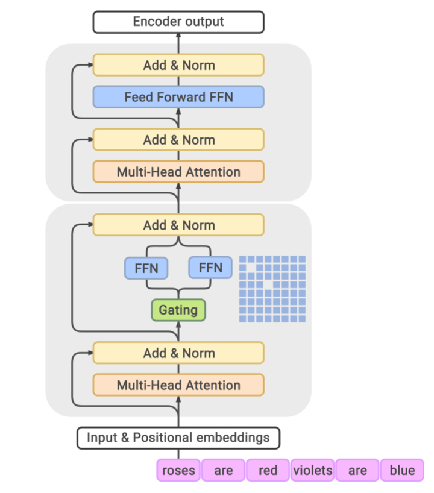
GLaM 展示 MoE 在 多任务学习 和 多语言处理 中优势，提升模型的泛化能力和效率。GLaM 稀疏激活和负载均衡机制被应用于 Mistral 8x7B，后续模型设计提供重要参考。
幻方量化在 2024 年 1 月发布了 “DeepSeek MoE: Towards Ultimate Expert Specialization in Mixture-of-Experts Language Models”，它有两大突破：1. 专家共享机制；2. 内存优化技术。
Expert 共享机制: 部分 Expert 在不同 Tokens 或层间共享参数，减少模型冗余，同时提高了参数效率。使得模型在保持高性能同时，计算开销降低 40%。
横向共享（跨层）
class SharedMoELayer(nn.Module):
def __init__(self, total_experts, shared_ratio=0.3):
self.shared_experts = nn.ModuleList([
Expert() for _ in range(int(total_experts*shared_ratio))
]) # 30%共享专家
self.private_experts = nn.ModuleList([
Expert() for _ in range(total_experts - len(shared_experts))
])
纵向共享（跨 token）
采用潜在专家概念，相似 token 自动共享专家：
Token A → [E1, E3]
Token B → [E1, E4] # E1 被共享
内存优化：通过多头潜在注意力机制（MLA） 和键值缓存优化，减少生成任务中的浮点运算量，推理延迟降低了 35%。
其中投影矩阵`\({W_i}\) 在不同专家间共享，减少 40%KV 缓存。
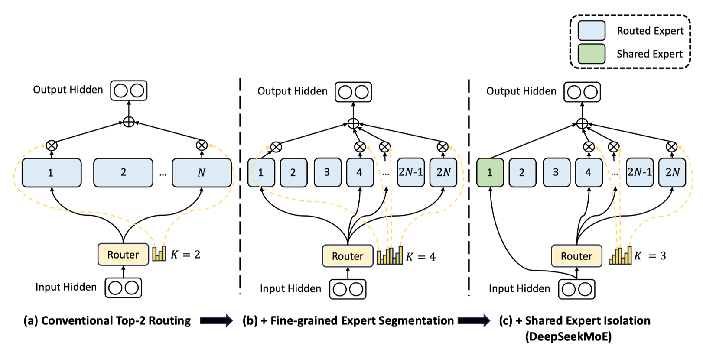
对应的影响 you：
低成本与高性能：DeepSeek MoE 架构创新和系统优化，实现百倍性价比提升，打破传统大模型依赖算力范式，为资源受限场景下 AI 应用提供新思路。
开源与生态建设：DeepSeek MoE 开源版本在文本生成、代码编写和逻辑推理等任务中表现优异，推动了 MoE 技术普及和应用。
从 GLaM 到 DeepSeek MoE 的技术演进，标志着混合专家架构进入效率驱动的新阶段。GLaM 证明了万亿参数模型的实际可行性，而 DeepSeek MoE 则通过专家共享和内存优化将技术民主化，使得资源受限的场景也能享受大模型的能力。未来随着算法创新与硬件协同设计的深入，MoE 有望成为 AGI 系统的核心架构范式，其发展值得持续关注。
Mixtral-MOE 可视化#
Mixtral 8x7B 采用Decoder-Only Transformer架构，关键创新在于将部分前馈网络（FFN）替换为稀疏 MoE 层。每层包含 8 个独立的专家网络（每个专家 7B 参数），但每个 Token 仅激活其中 2 个专家，总参数量 46.7B，实际激活参数 12.9B。
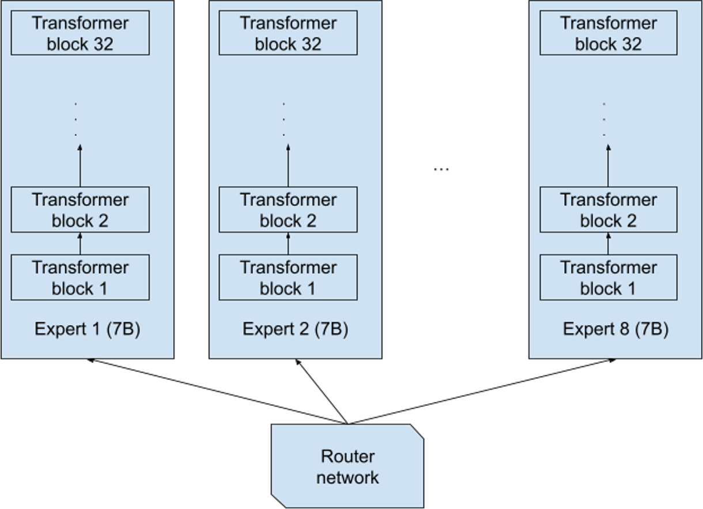
如上图所示，其有 8 个独立的专家网络。每个专家中包含 32 个 Transformer block。
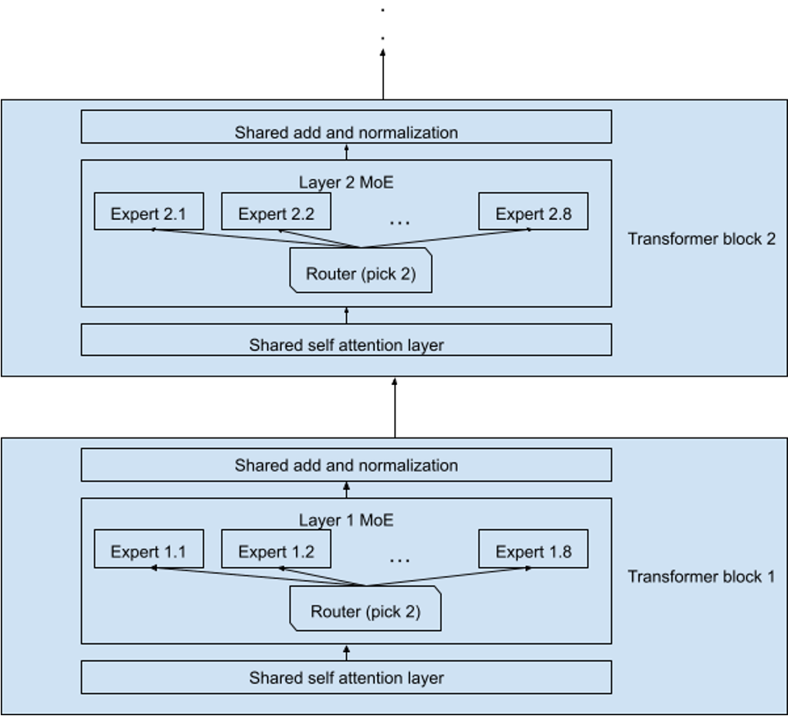
每个 Transformer block 中 MoE 层与标准前馈层交替排列，Attention 机制参数跨专家共享。
MMLU 包括 57 个主题多项选择题，涵盖领域广泛，如抽象代数、信仰、解剖学、天文学等。使用 MMLU（ Massive Multitask Language Understanding）基准测试进行实验。以 Mistral 8x7B 为例记录第 1 层、第 16 层和第 32 层 8 位 Expert 中每个 Expert 的激活情况。
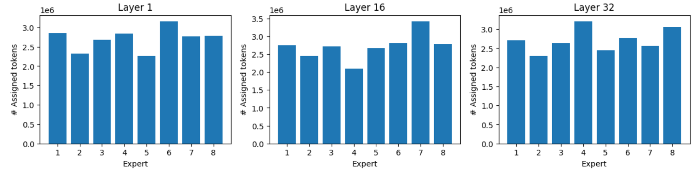
从上图可以看出，尽管存在负载均衡机制，自然任务分布导致不可避免的不均衡。但最忙碌 Expert 仍可获得比最闲 Expert 多 40%~60% Tokens。
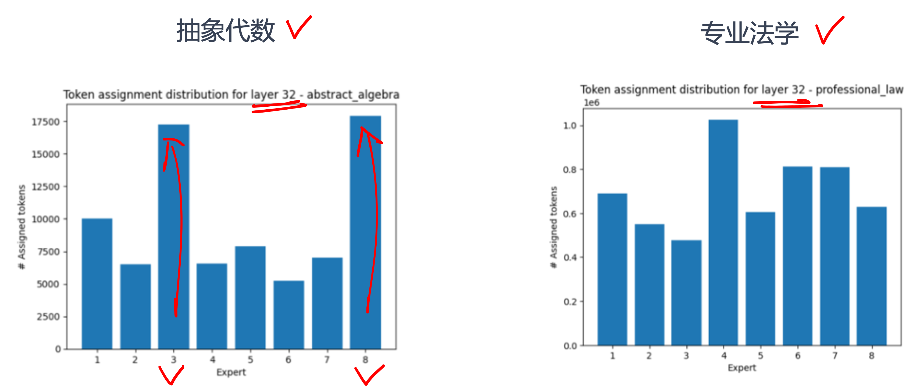
数学/逻辑类任务产生最强不均衡，某些领域比其他领域更能激活部分 Expert， Expert 能针对领域学习。如图所示，32 层专家高度专业化激活。Expert 的负载分布倾向于在不同的主题范围内保持一致。但当所有样本都完全属于某个主题时，可能会出现很大概率的分布不平衡。
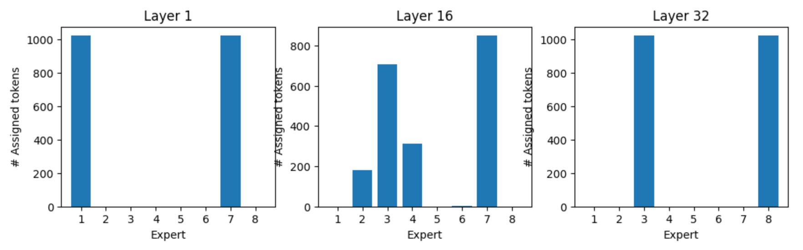
特定 Token 有自己的专家偏好。常见功能 Token 有稳定专家偏好（如":"偏好专家 5，“Who”偏好专家 7），语义丰富 Token 的专家选择依赖上下文。专家专业化形成层级结构，如语法层专家和语义层专家。
思考与小结#
MoE 架构通过稀疏激活与条件计算的本质创新，彻底打破“模型规模=计算成本”的传统范式。历经三十年演进，其模块化设计和分布式扩展能力已支撑起万亿参数时代，未来将在边缘智能、多模态感知等场景持续释放变革性潜力。规模与效率的协同进化，才是大模型的终极方向。